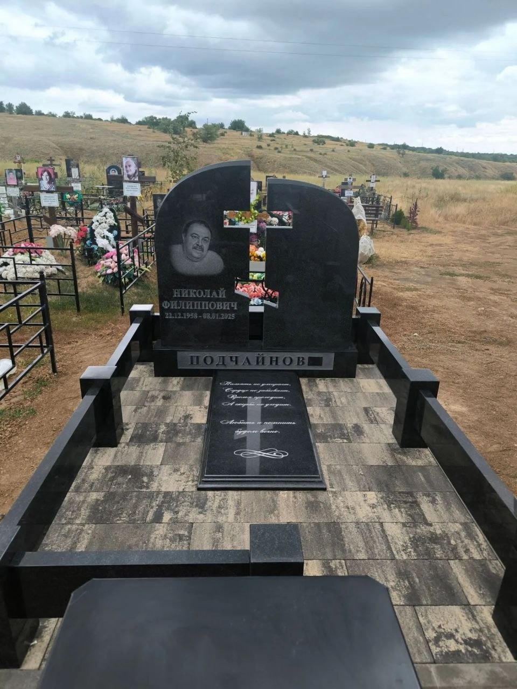
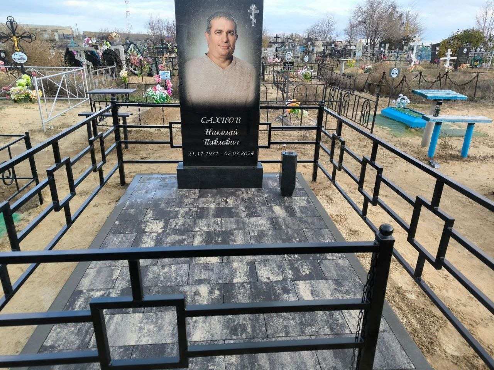
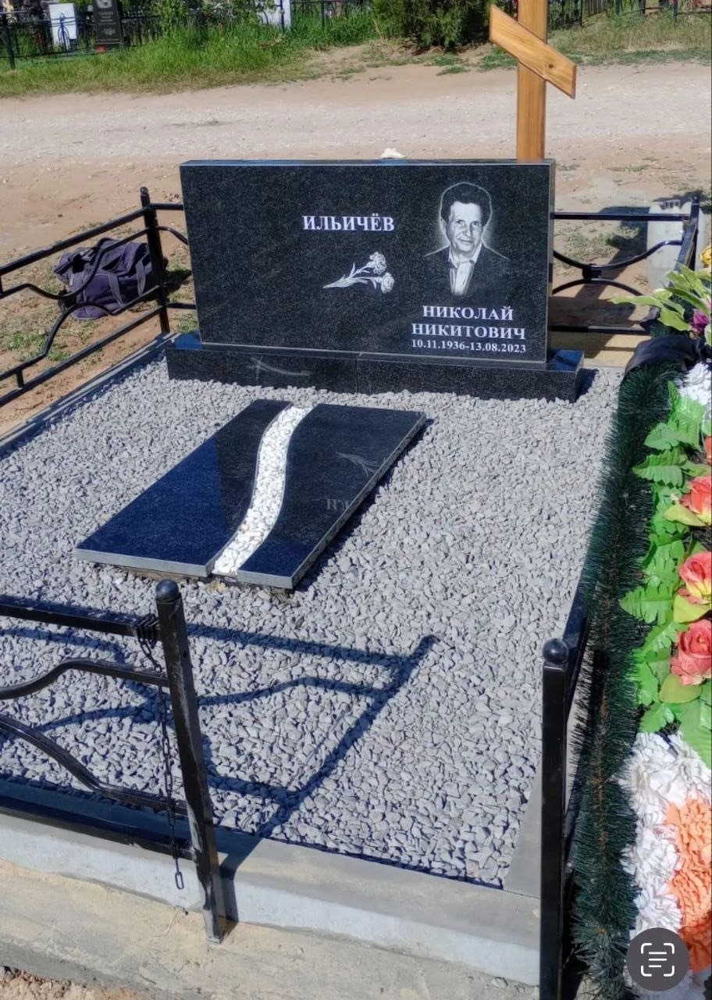
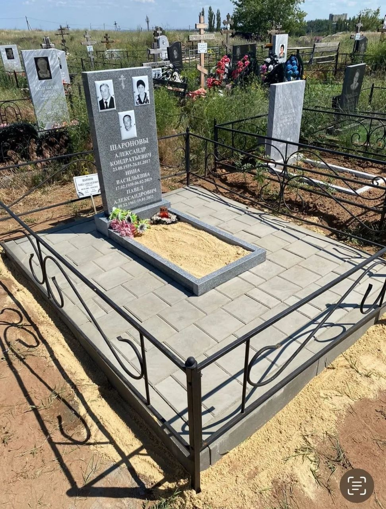
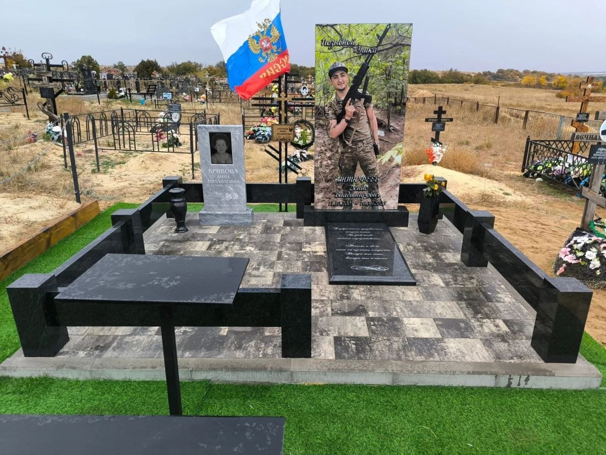
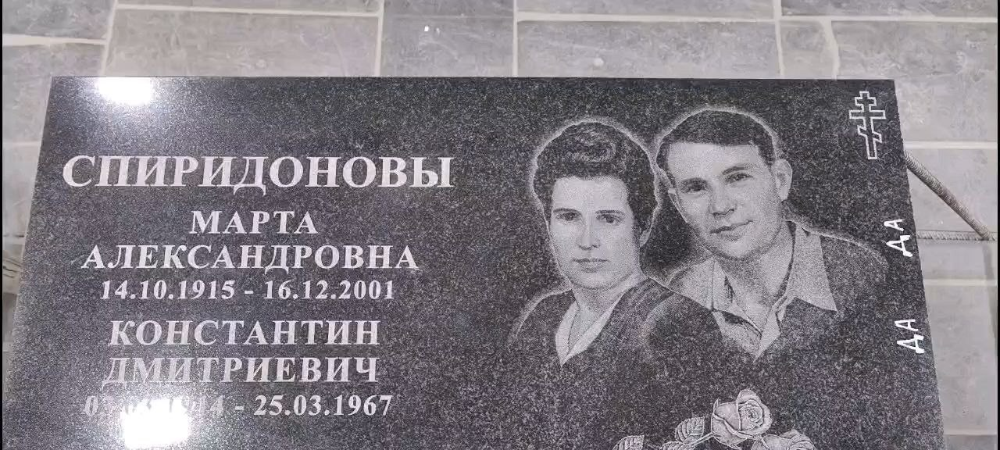
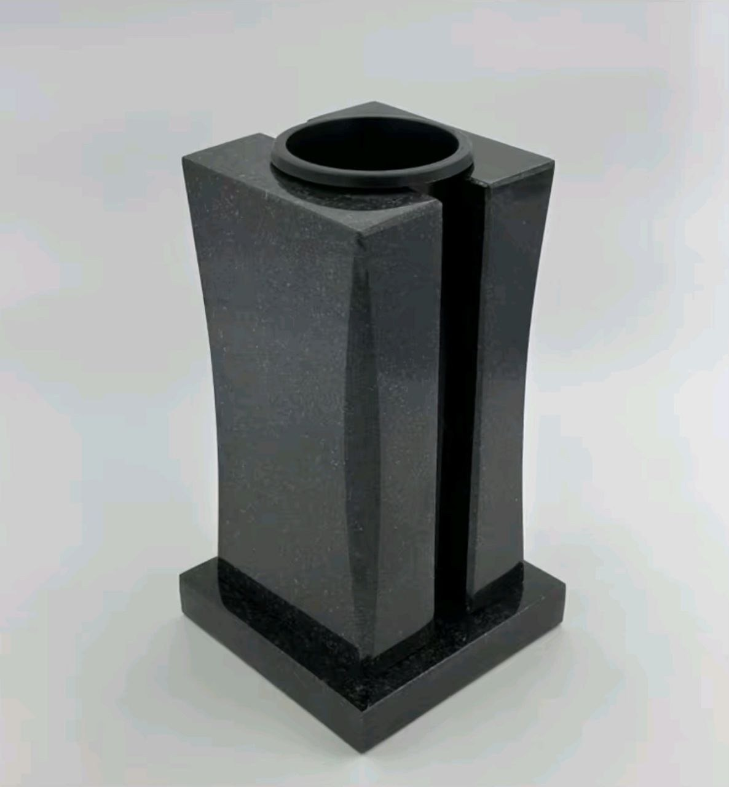

Памятники из камня
Гранит и мрамор, лаконичные формы и сложные индивидуальные проекты. Изготовим памятник по вашему замыслу.
Изготовление памятников в Волгограде
Поможем сохранить самое дорогое. Создадим памятник из гранита или мрамора — от первого эскиза до установки и благоустройства.
Цена договорная · Возможна рассрочка
на разработку дизайн-проекта
на изготовление памятника
доставка, установка и благоустройство
Что мы делаем
Возьмём на себя каждый этап.
Поможем выбрать материал, форму
и оформление с учётом ваших пожеланий.
Гранит и мрамор, лаконичные формы и сложные индивидуальные проекты. Изготовим памятник по вашему замыслу.
Точное оформление по фотографии: портреты, надписи и памятные детали, которые делают работу личной.
Доставим и установим памятник. Выполним облицовку и обустройство места захоронения.
У нас можно заказать разовую уборку участка. Объём работ и стоимость обсудим при обращении.
Работы мастерской
Примеры памятников и благоустройства.
Нажмите на фотографию,
чтобы рассмотреть работу подробнее.
Художественное оформление · Благоустройство

Гранит · Комплексное оформление

Художественное оформление · Облицовка

Гранит · Декоративное благоустройство

Портреты · Плитка и ограда

Индивидуальный проект · Установка под ключ

Бережно к деталям
Фотография, знакомый взгляд, важные слова. Выполним точное художественное оформление по фото и поможем подобрать надпись.
Обсудим детали на этапе дизайн-проекта, чтобы готовый памятник стал достойной памятью о близком человеке.
Получить консультациюЗавершающие детали
В наличии и на заказ — ограды, столы и лавки, кресты, искусственные цветы и венки, лампады. Поможем подобрать принадлежности к оформлению участка.
Уточнить наличие
От обращения до установки
Позвоните или напишите. Выслушаем ваши пожелания и бесплатно проконсультируем.
За два дня разработаем дизайн-проект. Вместе определим материал, форму и оформление.
Выполним работу по согласованному проекту. Срок изготовления — до двух месяцев.
Доставим памятник, установим и выполним согласованное благоустройство участка.
Индивидуальный расчёт
Цена договорная.
Возможна рассрочка.
Стоимость зависит от материала, размеров, художественного оформления и объёма работ. Обсудим ваш запрос и рассчитаем цену.
Оплата картой, банковским переводом или наличными.
Доставка и самовывоз.
Мы рядом, чтобы помочь
Позвоните или напишите — получите бесплатную консультацию.